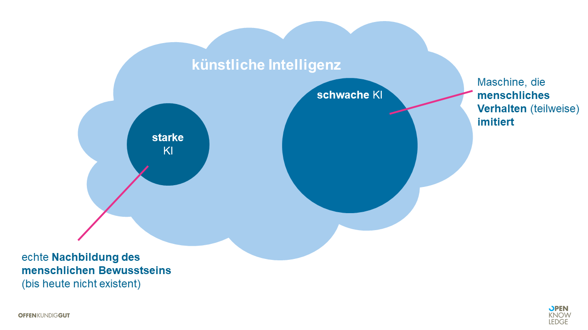
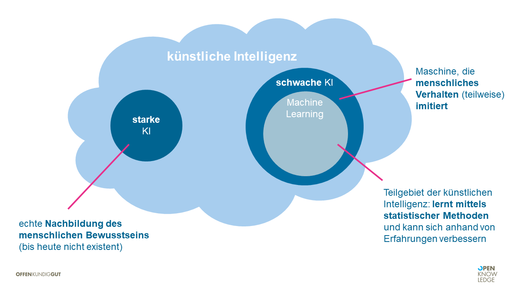
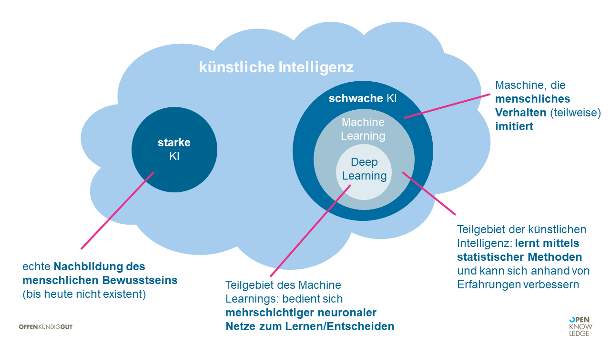
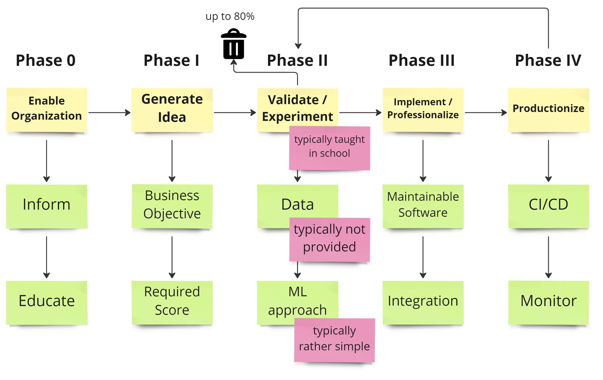

## Fünf Machine-Learning-Prinzipien, die nicht nur ML-Experten kennen sollten Oliver Zeigermann https://www.developer-week.de/programm/#/talk/funf-machine-learning-prinzipien-die-nicht-nur-ml-experten-kennen-sollten <!-- https://djcordhose.github.io/ml-resources/2023-5-prinzipien.html --> <img src="img/bit.ly_5-prinzipien-2023.png" style="height: 200px;"> Folien: https://bit.ly/5-prinzipien-2023
### Agenda 1. Was ist Machine Learning eigentlich? 1. Wie geht man in einem Machine-Learning-Projekt vor? 1. Wie unterscheidet sich ein ML-System von klassischer Software? 1. Welche Architekturprinzipien erfordern besondere Beachtung? 1. Warum kann fast jedes Projekt von Methoden aus dem Machine Learning profitieren?
### Agenda 1. *Was ist Machine Learning eigentlich?* 1. Wie geht man in einem Machine-Learning-Projekt vor? 1. Wie unterscheidet sich ein ML-System von klassischer Software? 1. Welche Architekturprinzipien erfordern besondere Beachtung? 1. Warum kann fast jedes Projekt von Methoden aus dem Machine Learning profitieren?
### Machine Learning <img src="img/ml-vs-dev-1.png">
### Machine Learning <img src="img/ml-vs-dev-2.png">
### KI vs Machine Learning vs Deep Learning 
### KI vs Machine Learning vs Deep Learning 
### KI vs Machine Learning vs Deep Learning 
### Wozu machen wir ML? <img src="img/KI_ML_Skizzen/ml-muster-aktion.png">
### Wann ist KI/ML sinnvoll? * Die Lösung des vorliegenden Problems ist unbekannt oder _schwer zu spezifizieren_ * Es liegen _Daten_ mit einer klaren, einfachen Eingabe und bestenfalls auch passender Ausgabe vor * Es gibt _Muster_ in der Eingabe, auf die reagiert werden kann * Die Lösung des Problems kann Fehler oder _Unsicherheiten_ tolerieren * _80% Genauigkeit_ werden selten übertroffen * Wir sind bereit und in der Lage, in einer initialen Phase _Experimente mit offenem Ausgang_ durchzuführen
### Agenda 1. Was ist Machine Learning eigentlich? 1. *Wie geht man in einem Machine-Learning-Projekt vor?* 1. Wie unterscheidet sich ein ML-System von klassischer Software? 1. Welche Architekturprinzipien erfordern besondere Beachtung? 1. Warum kann fast jedes Projekt von Methoden aus dem Machine Learning profitieren?
### Machine Learning Projeke können in Phasen gedacht werden 
### Phasen eines ML-Projekts ## Mülle kann überwiegende Mehrheit sein - positiven Aspekt darstellen: Aufwand gespart, das in die späteren, aufwändigen Phasen zu bringen - dokumentieren warum - Und Abschluss Präse - Learnings Präsentieren, nicht dass versagt - Powerpoint Erkenntnis und tolle Grafik
### Für ML braucht man viel Mathematik, oder? <img src="img/inspiration/matematica.jpg"> Sapienza Università di Roma - https://www.ing.uniroma1.it/
### When all the white sneakers you see are white <img src="img/inspiration/20230409_131604.jpg"> Confirmation Bias
### ML Vorhaben müssen machbar sein Forschungsprojekte vermeiden <div class="container"> <div class="col"> <img src="img/inspiration/20230412_122703.jpg"> </div> <div class="col"> <img src="img/inspiration/20230412_122440.jpg"> </div> </div> https://technikmuseum.berlin/
### Make vs Buy Auch von woanders aufnehmen
### Agenda 1. Was ist Machine Learning eigentlich? 1. Wie geht man in einem Machine-Learning-Projekt vor? 1. *Wie unterscheidet sich ein ML-System von klassischer Software?* 1. Welche Architekturprinzipien erfordern besondere Beachtung? 1. Warum kann fast jedes Projekt von Methoden aus dem Machine Learning profitieren?
### Aus Resilience und MLOps die einzelnen Folien übernehmen - Die überraschenden Eigenschaften - Mainstream - Stabilität - Alien Intelligence - Stability - https://twitter.com/BrianRoemmele/status/1660410789940060163 - wenn sich Modelle verändern gehen die Prompts nicht mehr so wie vorher, das ist klar - ich glaube das meint sie - gab ein Update des Default-Modells bei ChatGPT, zuerst war das alte nur deprecated, jetzt aber ganz weg, glaube ich - Prompt Engineering gilt im Detail also auch immer nur für eine spezielle Version eines speziellen Models - der ganze ML Kram ist voll von überraschenden Eigenschaften, an die man sich gewöhnen muss - und sowas wie mangelnde Stabilität ist ein großes Problem - nicht nur bei ChatGPT - diese Modelle haben so viele Freiheitsgrade, da kann schon jedes neue Training ein deutlich anderes Verhalten haben
### Agenda 1. Was ist Machine Learning eigentlich? 1. Wie geht man in einem Machine-Learning-Projekt vor? 1. Wie unterscheidet sich ein ML-System von klassischer Software? 1. *Welche Architekturprinzipien erfordern besondere Beachtung?* 1. Warum kann fast jedes Projekt von Methoden aus dem Machine Learning profitieren?
### Ein ML Modell geht nicht für sich allein in Produktion <img src="img/ml-system.jpg" style="height: 550px;">
### Warum Ensemble/Fallback? * Ein ML Modell ist mit Daten eines bestimmten Bereichs trainiert * manche Anfragen sind nicht in diesem Bereich * die meisten Modelle haben keine Ahnung wann sie keine Ahnung haben * daher müssen wir festlegen, welche Anfrage wohin geleitet wird * Auch nach der Vorhersage kann entschieden werden, dass die Wahrscheinlichkeit nicht hoch genug ist * Dann ein anderes Modell befragen * Manche Modelle sind teurer im Betrieb als andere, diese eher später nutzen * Oft ist ein einfaches heuristisches Regelsystem eine gute Alternative / Fallback * Bei mehreren passenden Modellen ist auch eine Mehrheitsentscheidung denkbar * Mehr Vorschläge: https://twitter.com/ChristophMolnar/status/1647881654873063426
### Agenda 1. Was ist Machine Learning eigentlich? 1. Wie geht man in einem Machine-Learning-Projekt vor? 1. Wie unterscheidet sich ein ML-System von klassischer Software? 1. Welche Architekturprinzipien erfordern besondere Beachtung? 1. *Warum kann fast jedes Projekt von Methoden aus dem Machine Learning profitieren?*
### Business-Metriken
### Und diese Punkte, die standardmäßig in ML Projekten betrachtet werden 1. managing uncertainty 1. adversarial attacks and outlier detection 1. out-of-distribution robustness 1. drift and monitoring 1. unwanted bias 1. stability
# Vielen Dank ## Fünf Machine-Learning-Prinzipien, die nicht nur ML-Experten kennen sollten Bleibt gern im Kontakt https://www.linkedin.com/in/oliver-zeigermann-34989773/ oliver@zeigermann.de Twitter: @DJCordhose Folien: https://bit.ly/5-prinzipien-2023